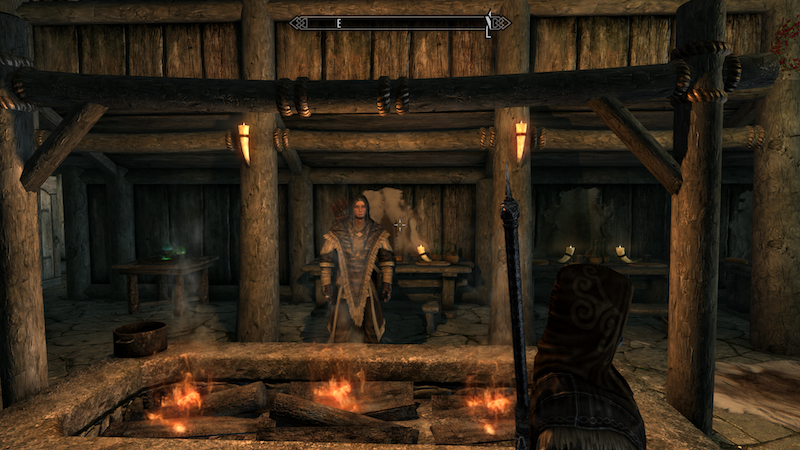

Skyrim lends itself to a huge variety of different characters and play styles. The three main attributes of a character are health, magicka, and stamina. The various play styles include typical archetypes of an RPG such as the sword and shield warrior, the Mage who can cast Fire and Frost, and the stamina based stealth and archery types. Within these main archetypes there are large number of secondary attributes that complement the main ones. For instance a stamina stealth based character can also excel in lock picking and pickpocketing. Both the main and secondary attributes can be leveled up and specialized via the talent tree. The talent tree allows even more customization by giving each attribute special talents as they level up. The character at the top of this page is a Dark Elf I named Sylvanas She utilizes the arts of stealth and Archery to bring down enemies from a safe distance before they even know she’s there. She also specializes in lock picking and dagger weapons.
This character you see warming up near the fire is a magic based character that I humbly named after myself. Valentin the Mage specializes in Destruction magic (fire, frost, and shock) spells that leave his enemies a pile of ash (literally, you can turn people to ash in this game, its great). There are other magic types that give you other unique play style. If you want to stay magic but let other people fight for you, you can specialize in Conjuring, which lets you raise the dead and summon demons to do your dirty work. Me, I prefer blowing stuff up.